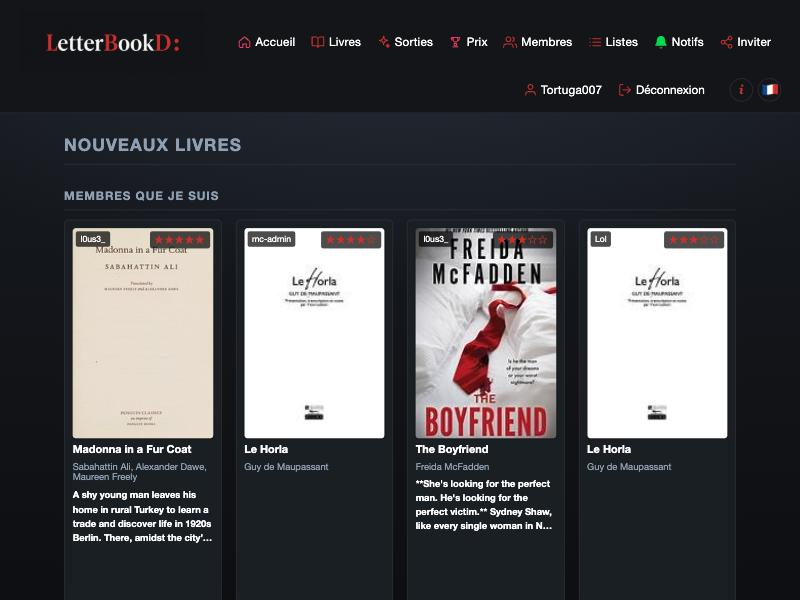

Accueil
À quoi ça sert : Voir en un coup d'œil ce qui bouge dans tes clubs : qui vient d'ajouter quel livre, avec quelle note. C'est ton point d'atterrissage après connexion et la principale porte d'entrée vers les nouvelles lectures des autres membres.

Parcours
La page s'ouvre sur 'Nouveaux livres', divisée en deux sections : 'Membres que je suis' (les membres que tu as mis en favoris) et 'Autres membres' (les autres membres de tes clubs). Chaque fiche affiche la couverture, le pseudo du membre, sa note (en étoiles), le titre, l'auteur, et le début de son avis. Clique une couverture pour aller voir la fiche du livre ; clique le pseudo pour voir le profil du membre.
Chaînes d'action
Chaque ligne décrit un déclencheur dans l'interface, ce qu'il ouvre (modal ou formulaire), et l'effet produit.
| Déclencheur | Modal / Champs | Effet |
|---|---|---|
| Barre de navigation en haut | Liens : Accueil, Livres, Sorties, Prix, Membres, Listes, Notifs (cloche verte si quelque chose à lire), Inviter. Côté droit : Modération (visible seulement si tu es admin), pseudo (profil), Déconnexion, bouton 'i' (À propos), bouton drapeau (langue). | Chaque lien ouvre la page correspondante. La cloche de 'Notifs' passe au vert si tu as des notifications non lues. |
| Clic sur une couverture ou un titre de livre | — | Ouvre la fiche détaillée du livre : avis, note moyenne, boutons pour noter, suggérer, ajouter à une liste. |
| Clic sur un pseudo de membre | — | Ouvre le profil du membre (ses lectures, avis, listes visibles dans vos clubs communs). |